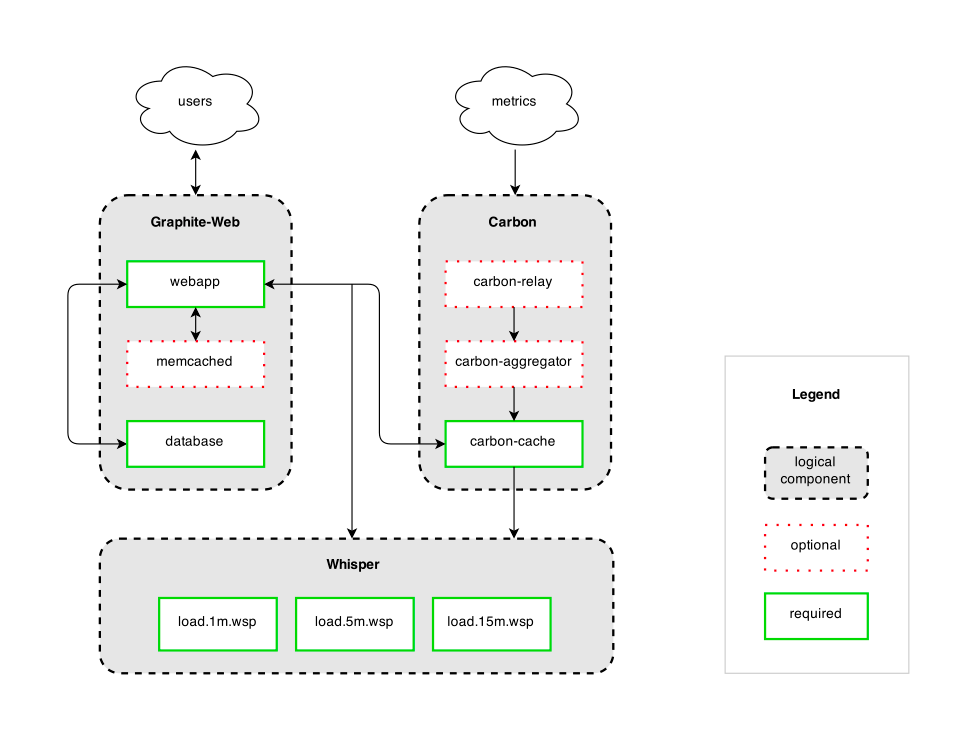

Graphite 是处理可视化和指标数据的优秀开源工具，它提供给了强大的查询API和丰富的功能。实际上，Graphite 做了两件事，一是存储时序数据，二是按需渲染数据图表。 Graphite 并没有提供数据采集的能力，但是可以和许多工具完美搭配起来。
Graphite 的架构中包含三个部分

- Carbon 是一组守护进程，用户监听发送到的指标数据并写入存储。
- Whisper 是一个时序数据库，用户存储指标数据。
- Graphite-Web 是一个一个基于 Django 的 Web 应用程序，用户数据
安装 Graphite
使用 Docker 安装
使用 Docker 可以快速地将 Graphite 安装并运行起来：
docker run -d\ |
包含了以下组件
- Nginx - reverse proxies the graphite dashboard
- Graphite - front-end dashboard
- Carbon - back-end
- Statsd - UDP based back-end proxy
端口映射
| Host | Container | Service |
|---|---|---|
| 80 | 80 | nginx |
| 2003 | 2003 | carbon receiver - plaintext |
| 2004 | 2004 | carbon receiver - pickle |
| 2023 | 2023 | carbon aggregator - plaintext |
| 2024 | 2024 | carbon aggregator - pickle |
| 8080 | 8080 | Graphite internal gunicorn port (without Nginx proxying). |
| 8125 | 8125 | statsd |
| 8126 | 8126 | statsd admin |
源码安装 Graphite
一、python部分：
0、系统：
cat /etc/redhat-release |
1、检查系统python是否2.7以上（最新graphite需要python至少2.7）：
$ python -V |
2、安装pip：
yum install python-pip |
这里安装后的版本是8，后面还需要再升级一下pip，因为安装cairocffi时需要。
二、下载相关源码、并且安装：
1、git下载graphite相关源码下载、安装：
cd /opt |
这时在/opt下多了一个graphite目录，/opt目录如下
drwxr-xr-x 9 root root 4096 Sep 17 10:30 carbon |
2、检查依赖：
cd /opt/graphite-web |
3、安装依赖cairocffi：
1）pip install cairocffi安装，会遇到如下问题：
$ pip install cairocffi |
解决：根据提示，我们需要升级pip。
$ pip install --upgrade pip |
解决：
$ yum install libffi-devel |
3）继续安装，可能会遇到如下问题：
$ pip install cairocffi |
解决：
yum install python-devel |
至此，一般就可以成功安装cairocffi了。
$ pip install cairocffi |
4）有的时候，在上面依赖都解决后安装时会遇到网络问题：
$ pip install cairocffi |
解决：
根据报错中的连接地址手工下载pycparser-2.18.tar.gz，然后解压python setup.py install 执行后即可；还有可能cffi-1.11.5.tar.gz无法下载，同样根据报错连接地址手工下载，然后解压python setup.py install 执行后即可。
5）安装完pip install cairocffi后，再次执行$ python check-dependencies.py 检查依赖：
$ python check-dependencies.py |
我们发现报错了，在安装cairocffi之前还没有报错。解决如下：
yum install cairo-devel |
再次执行
$ python check-dependencies.py |
4、安装其他依赖：
1）django：
查看官网 https://graphite.readthedocs.io/en/latest/install.html#dependencies ，至少需要django1.8
pip install Django==1.8 |
2）安装pytz：
pip install pytz |
3）安装pyparsing：
$ pip install pyparsing |
4）安装jdango-tagging：
$ pip install django-tagging |
然后再次检查依赖：
$ python check-dependencies.py |
三、配置：
1、重命名配置文件：
进入到/opt/graphite/conf目录下，里面有很多例子，我们需要把后缀example去掉
cd /opt/graphite/conf |
2、启动carbon-cache：
cd /opt/graphite/bin |
1）启动报错：
$ ./carbon-cache.py start |
解决：安装twisted
$ pip install twisted |
2）在pip install twisted的时候，有可能网络问题无法下载依赖：
Collecting twisted |
解决：根据报错提示连接地址，手动下载incremental-17.5.0.tar.gz，然后python setup.py install
至此，可以成功启动carbon。
$ ./carbon-cache.py start |
检查进程：
$ netstat -nap | grep 2003 |
发送数据：
yum install nc |
3、同步数据：
1）第一种方式：
cd /opt/graphite-web/webapp/ |
在执行过程中可以设置用户名密码（用于在web界面上登录）
注：通过源码安装graphite，manage.py没有被放到/opt/graphite/下，需要手动拷贝过去。
2）第二种方式：
PYTHONPATH=/opt/graphite/webapp django-admin.py migrate --settings=graphite.settings --run-syncdb |
注：执行django-admin.py syncdb –settings=graphite.settings提示找不到syncdb，原因是django 1.7以后需要使用 migrate
四、启动graphite：
graphite指的是一个大的技术集合，她依赖了carbon、whisper、graphite-web三个组件，上面我们已经把carbon启动了。这一步启动graphite其实指的是启动graphite-web，graphite-web是一个python写的web项目，使用了djiango框架。此外，graphite-web除了提供界面外，还提供了很多restful的api接口（比如查询数据、聚合数据等）
1、设置graphite local_settings.py文件
cp /opt/graphite/webapp/graphite/local_settings.py.example /opt/graphite/webapp/graphite/local_settings.py |
修改内容：
DEBUG = True #不设置 页面不能正常显示 |
DEBUG不设置的话，启动后访问页面是空白的。
2、启动服务
python /opt/graphite/bin/run-graphite-devel-server.py --port=8085 --libs=/opt/graphite/webapp /opt/graphite 1>/opt/graphite/storage/log/webapp/process.log 2>&1 & |
通过 http://ip:port 访问到graphite 页面。